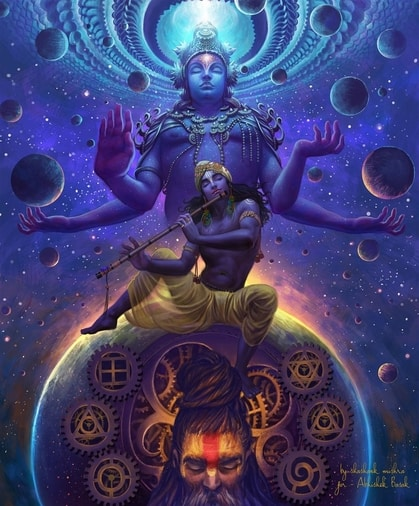
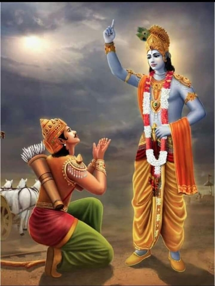

About
Who is Krishna?

This is how Lord Krishna describes himself in the Bhagavad Gita. The position of Krishna as the Supreme God is confirmed by great personalities like Narada, Asita, Devala, Vyasa, Parasara, Brahma and Shiva.
Sri Krishna is the central character in the Mahabharata, the Bhagavata Purana and the Bhagavad Gita. He is worshipped as the eighth and the most powerful avatar of Lord Vishnu and also as the supreme God in his own right. The name Krishna—”the all-attractive one”—indicates the unequalled charm and magnificence of the Supreme Person. He is known by various names, such as Govinda, Mukunda, Madhusudhana, Vasudeva, and Makhan chor. He has been portrayed in various perspectives: a god-child, a prankster, a model lover, a divine hero, and as the supreme God.

Lord Krishna is the embodiment of love and divine joy, who destroys all pain and sins. His body is spiritual and thus eternal. His complexion is dark-blue, like that of a rain-filled cloud and His eyes are like lotus petals. He is ever youthful, full of bliss and His beauty excels that of thousands of cupids. He wears a crown with a peacock feather on his head and loves to play the flute.

During the Mahabharata war, Krishna gave Arjuna the immortal spiritual discourse of the Bhagavad Gita. He also popularised the devotional bhakti yoga through his time with Radha and the Gopis in Vrindavan.
Sri Krishna says in Bhagavad Gita: “Whenever, righteousness declines and unrighteousness prevails, I manifest Myself. For the protection of the righteous and the destruction of the wicked, and for the establishment of religion, I come into being from age to age.”
Who is Radha?
Radha is a milkmaid (gopi), the eternal lover and the most represented companion of the Krishna in the medieval era texts. She is considered to be an avatar of Lakshmi. She is also known as Radhika, Radharani and Radhikarani, and is almost always depicted alongside Krishna. Radha is the most important gopi in Raas (Special kind of dance) with Lord Krishna. Among all the Gopis, Srimati Radharani is the most important and the most beautiful one. She is the queen of Vrndavana. She has many famous friends, headed by Lalita and Visakha. She is decorated with a garland of flowers and a beautiful pearl necklace. Her arms have defeated Cupid’s staff with their beauty. Decorated with black mascara and reaching back almost to Her ears, Srimati Radha’s lotus eyes are the most beautiful in all the three planetary systems. Her nose is as beautiful as a Sesame flower and is decorated with a pearl. She is splendidly beautiful.
Radha is considered a metaphor for the soul, her longing for Krishna theologically seen as a symbolism for the longing for spirituality and the divine.